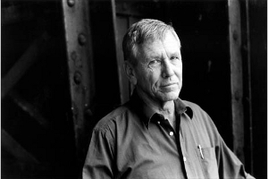

AMOS OZ
Amos Oz'un (1939'da Kudüs'te doğdu) tüm dünyada en fazla tanınan İsrailli yazar olduğu kesindir: eserleri otuz beş dile çevrildi, çok sayıda edebiyat nişan ve ödülü aldı. Rus ve Polonya kökenli bir ailede doğan Amos Oz 1954 yılında aile adını değiştirir: Klausner, İbranicede "güç, cesaret" anlamına gelen Oz olur. Kudüs İbrani Üniversite'sinde felsefe ve edebiyat öğrenimi görür, Oxford ve Colorado üniversitelerinde ders verir. Altı Gün Savaşı'nın ardından kitap yayımlamaya başlar. 1977 yılında, İsrail-Arap çatışmasında karşılıklı müzakereyi savunan bir çözümden yana mücadele veren uluslararası bir kolektif olan "Barış Şimdi!" hareketinin kurucularındandır. Cenevre Anlaşmaları'nın imzacısı olarak uluslararası basına düzenli olarak yazar. 2006 yılında Soudain dans la fôret profonde (Gallimard) romanını yayımlar. Ayrıca yine Gallimard'dan çıkmış şu eserleri sayabiliriz: Une histoire d'amour et de ténèbres (2005), Ailleurs peut-être (2006) ve Commenrt guérir un fanatique (2006). Amos Oz Sanat ve edebiyat görevlisi olarak atanmıştır. La boîte noire (Calmann-Lévy) için 1988 Femina Yabancı Kitap ödülü ile 1992 Frankfurt Barış Ödülü'nü aldı. Necef Çölü'nün kuzeyinde, Arad'da yaşamakta ve Ben Gurion Üniversitesi'nde edebiyat dersleri vermektedir.

OZ
Kitaplarınız İsrail toplumunun, bu toplumu oluşturan erkek ve kadınların hem karmaşık hem de doğru bir tasvirini sunuyor. Yine de bu kitaplar, otuz iki ülke diline çevrilmiş best-seller'lar, tam anlamıyla İsrail romanı izlenimi asla vermiyor. Bu başarının nedenlerinden birinin, başka ülkelerde de anlaşılabilen varoluşsal insanlık sorunlarına ve kültüre bağlı olduğunu düşünebilir miyiz?
Benim kitaplarımın İsrail'i dünyanın geri kalanına açıklamaya yönelik olduğunu sanmıyorum. Bence, burada işin içinde olan şey, edebiyatın büyüsüdür. Ne kadar yerel karakterdeyse, ne kadar taşraysa, evrensele de o kadar erişebilir. Büyüsü burada yatıyor. Uluslararası olmayı hedeflediğinde hiçbir yere varamaz. Benim kitaplarım fazlasıyla İsrailli'dir, tıpkı Çehov'un kitaplarının fazla Rus, Faulkner'ınkilerin fazla Missisippi Amerika'sı ve García Márquez'inkilerin de fazla Kolombiyalı olması gibi.
İzin verirseniz soruyu başka türlü ifade edeyim: Bütün insanların, erkeklerin ve kadınların bütün sorunlarının, tüm dünyada, bütün halklarda, her yerde aynı olduğunu söyleyebilir misiniz?
Olağanüstü bir soru bu, çünkü, belli bir düzeyde, bütün sırlarımız aynıdır. Daha derin bir düzeyde farklılaşırlar, ama daha da derine inildiğinde yeniden benzeşirler. Bir anlamda, burada sırlardan oluşan yaprak yaprak, katman katman kitaplar var. Başka ülkelerden, başka kültürlerden ve başka dönemlerden gelen bütün kitapları okuyorsak, bu, insanların hangi kesin ölçülerde bize benzediklerini ve hangi noktada bizden tamamen farklı olduklarını keşfetmek içindir. Bu nedenle okuyoruz.
İsrail'in güneyinde yaşamayı seçtiniz. Necef'in, ülkenin güneyinin David Ben Gurion'un geleceğe dair büyük hayalini oluşturduğunu biliyoruz, keza onun düşünün gerçekten bir sonuca ulaşmadığını da biliyoruz, çünkü İsraillilerin çoğu periferidense merkezi tercih ediyor. Bu nedenle yoksullar güneyde yaşarken, İsrail'in kültürel evreni ülkenin merkezinde toplanıyor. Ani sıçramalara rağmen artık bir olgu halini almış olan barış sürecinin bu gerçeklikte bir dönüşüme yol açacağı kanısında mısınız? İsrail'in güneyinin ve ülkenin diğer periferi bölgelerinin bir dönüşüm geçireceğini ve bütün ülkenin yeni bir jeopolitik haritaya kavuşacağını düşünüyor musunuz?
Kişisel olarak ben birçok nedenden dolayı çölde yaşıyorum. Öncelikle çölü seviyorum ve periferide yaşamayı da seviyorum. Ben bir periferi insanıyım. Merkez insanı değilim, periferi tam bana göre. Barış olursa yüz binlerce İsrailli toprakların periferisine gelip yerleşir mi? Bilmiyorum.
Bu birçok faktöre bağlı, idealist faktörlere değil, ama belki de yaşam kalitesine, toprakların ve evlerin fiyatlarına ve benim kavrayamadığım bu türden başka öğelere. İsrail'in kurucu baba ve annelerinin başlangıçtaki düşünün asla tam anlamıyla yerine getirilemeyeceği kanısındayım. Hatta daima olağandışının alanında, vaat durumunda kalmak düşlerin doğası gereğidir; bunlar düş olduğu sürece dokunulmadan kalacaklar. Gerçekleştiğinde ise, her düş, tanım gereği, belli bir hayal kırıklığına yol açar. Bu bir romanın yazılışı için de geçerlidir, cinsel bir fantezi, ekilen bir bahçe ya da inşa edilen bir ülke için de geçerlidir. İsrail gerçeklik halini almış bir düştür ve bu nedenle çok sayıda hayal kırıklığı da içermektedir.
Çölü seviyorsunuz. Neden?
Çöl her şeyi doğru oranlar içine yerleştirmeme yardım etti. Artık yıllardır günüme çölde küçük bir gezintiyle başlama alışkanlığı edindim, çok erken vakitte, sabahın erken saatinde. Bu tepeleri ve vadileri fark ediyorum, on beş bin yıldır değişmeden kalmışlar. Sonra evime dönüyorum, bir kahve içiyorum, radyoyu açıyorum ve politikacıların "asla", "daima", "sonsuza dek" diye tekrarlamalarını işitiyorum ve biliyorum ki bu dualara, orada, dışarıda, ancak gülünür, çünkü çölün sonsuzluğu politikacıların sonsuzluğundan farklıdır. Çöl, benim için, kurtarıcı bir alçakgönüllülüğün büyük kaynağıdır.
İsrail'de yaşıyorsunuz ve bu son yıllarda Musevilikte yeni dalgaları serbest bırakma, yeni örgüt ve yeni ideolojilerle donatma yönünde güçlü eğilimler görüldü. Yeni Dünya'ya göçü engellemek isteyen güçlü bir muhalefet hareketi bizzat Museviliğin içinde ortaya çıktı. Bu eğilimin başarılı olacağını düşünüyor musunuz? Sizce yakın bir gelecekte Museviliğin durumu ne olacak?
Benden peygamberlik yapmamı ve size geleceğin ne olacağını söylememi bekliyorsanız, benim için bunun çok güç olduğunu size itiraf etmeliyim, özellikle de peygamberlik mesleğinde rekabetin çetin olduğu bu ülkede. Musevilik her zaman yorumlara, yeniden yorumlara, karşı-yorumlara ve gözden geçirilmiş yorumlara çok açık bir oyundu. Yahudi geleneğinde bir anarşi geni var. Yahudilerin hiç papalarının olmamış olması, asla bir papa seçememeleri sıradan bir şey değil. Birinin aklına, "Ben Yahudilerin papasıyım" demek gelse, herkes gelip omzuna vurur ve ona şöyle derler: "Selam papa, sen beni tanımıyorsun, ben seni tanımıyorum, ama benim büyük babamla senin amcan Minsk'te ya da Casablanca'da birlikte iş yapıyorlardı, bu yüzden sus ve izin ver sana, beş dakika içinde, Tanrı'nın bizden gerçekten istediği şeyi anlatayım." Museviliğin doğasında var bu. Elbette yeni yorumların, yeni eğilimlerin ortaya çıktığı görülecek, her zaman oldu bunlar. Museviliğin özünde var bu.
Ama günümüzdeki farklılık İsrail devletinin varlığına ve Musevilik ile ülkenin politik problemleri arasında ortaya çıkan karşılıklı bağımlılığa bağlı. Elli yaşındaki bu devlet Musevilik ve İsrail için yeni bir unsur değil mi?
Hayır, ben durumun çok basit olduğu kanısındayım. Devlet bütün bunların dışında kalmalı. Devlet Museviliği rahat bırakmalı. Musevilik kalkınacak, evrim geçirecek, gelişecektir ve belki de dönüşecektir, ama devlet ona ne yardım etmeli ne de karıştırmalıdır. Devlet Museviliği canlandırmak ya da değiştirmek için karışmamalıdır. Devletin sürdürmesi gereken kimi işler vardır, devlet bir girişimdir. Ulaşımı, hastaneleri ve kanalizasyonu düzenlemelidir, Museviliği değil.
Kuşkusuz ama şu an için durum bu değil. Aslında Museviliğin gerçekleri ile devletinkiler bir değil!
Uygar ülkelerde kiliseyle devletin ayrılması ya da devletle sinagogun ayrılması yüzlerce yıl sürdü, çoğu zaman da kan gölleri pahasına gerçekleşti. Fransa'nın giyotin pahasına Fransa olduğunu, İngiltere'nin kilisesini devletinden iki yüz yıllık iç savaş pahasına ayırdığını unutmayalım. İsrail'de biz bir iç savaş istemiyoruz. Bu zaman alacaktır. Devlet ve sinagog sorunu, din ve devlet sorunu çözümsüz kalıyor ve muhtemelen daha bir yüzyıl veya daha fazla süre boyunca da çözümsüz bir gerilim kaynağı kalacak, ama ben kan banyosundansa, sorunu altı ayda çözebilecek kanlı bir iç savaştansa bu yavaşlığı tercih ederim. İç savaş istemiyorum, sorunu altı ayda çözmek istemiyorum.
Sizin ilk ocağınız kibbutzdu. Bugün birçok kişi kibbutzun neden öldüğünü sorguluyor. Sizce de öldü mü?
Kibbutz günümüzde çok kötü bir noktada, kibbutzun durumu kötüye gidiyor. Bu fikrin ya da bu kavramın hâlâ önemli bir gelecek taşıdığı inancındayım, çünkü, kısacası, şair John Donne'un yıllar önce ifade ettiği gibi, hiçbir insan ada değildir. Ben buna şunu ekleyebilirim: her erkek, her kadın bir yarımadadır. İnsanların gerekenden çok daha fazla çalıştıkları bu aşırı Darwinci dünyada; gerçek anlamda ihtiyaç duymadıkları bir parayı daha fazla kazanmaktan, gerçekten arzulamadıkları nesneleri satın almak ve gerçekten sevmedikleri insanları etkilemek amacıyla çalıştıkları bir dünyada eşitlikçi bir topluluk fikrinin hâlâ gelecek vaat ettiği kanısındayım, İsrail'de de başka yerde de. Bu Hora dansçıları da olabilir kibbutz da, bilemiyorum, ama kibbutz asla folklorun alanına ait olmadı. Belki de geleceğin kibbbutzu inek sağmaya değil, yüksek teknolojiye dayanacaktır. Ama ne olursa olsun, bu eşitlikçi komün fikrinde, bizim mutsuz şimdiki zamanımız nedeniyle çok büyük bir gelecek yatıyor.
Ama kışkırtıcı bir unsur olarak hareket ediyormuş gözüken bu eşitlik fikri kibbutzun yenilgisini engellemedi. Günümüzde olup biteni gözlemlersek, kibbutz üyelerinin çoğunun, özellikle de gençlerin çekip gittiğini fark ederiz. Ayrıca, kibbutzlar şimdi artık sermaye sahibi ve sizin İsrail toplumuna dair çizdiğiniz tablo, başarı kaygısıyla birlikte, böyle bir ütopyanın imkânsızlığına kanıt değil midir?
Vahşi bir iştah çağında yaşıyoruz. Benim insan doğasını okuyuşum, günün birinde birçok insanın bu oyunu daha fazla oynamayı reddedeceğini düşünmeye yöneltiyor. Genç kadrolar aralarındaki bu Darwinci rekabeti reddedecekler. O zaman kibbutzda neyin başarısız kaldığını incelemek zorunda olacaklar. Kibbutz, insan doğası bir kuşak içinde değiştirilmeye çalışıldığı andan itibaren başarısız kaldı. Fazla ihtirastı bu, bir anlamda fazla idealistçe. Geleceğin kibbbutzu mizah duygusuna daha fazla sahip olmalıdır, insan doğasının zaaflarına ve çatlaklarına daha fazla sabır göstermelidir. Eğer daha hoşgörülü, daha sabırlı ve daha tuhaf görünmeyi bilirse kibbutz başarılı olur.
Kibbutzun çok sayıda sakıncası arasında başta gelenlerden biri kuşkusuz ki aile fikrini ve gerçeğini dönüştürme teşebbüsüne bağlıydı. Aile anlayışını değiştirme yönündeki bu iradenin kibbutzun karşılaştığı güçlüklerle bağı olduğu kanısında mısınız?
Aile! Bir anlamda ben kendimi aile konusunda uzman kabul ediyorum, çünkü kırk yıldan beri yazdığım her şeyin, hemen hemen her romanımın, neredeyse bütün hikâyelerimin ana teması "aile." Ailenin tarihteki bütün kurumlar içerisinde en tuhaf, en esrarengiz, en paradoksal ve aynı zamanda da en güçlü kurum olduğu kanısındayım. Binlerce yıl boyunca ailenin çökeceği öngörüldü. Platon ailenin işini bitirmek istedi. İsa ailenin işini bitirmek istedi. Bütün devrimler aileyi uzak tutma yönündeki bir teşebbüsle başlar. Yine de ailenin Tahran'da ve Kuzey Kore'de, Greenwich Village'da ve Avrupa'da, Eskimolarda ve Afrikalılarda varolduğu görülür. Bu kurum esrarengizdir. Kibbutz aile çekirdeğinin yerine geçme teşebbüsünü yeniden düşünmelidir. Kibbutzu genişlemiş bir aile biçiminde yayma fikri kötü değildir, yeter ki aile çekirdeğinin yerine kibbutz konmaya çalışılmasın. Kısacası, aile güç bir kurumdur, ama çok inatçıdır.
Aile yeni bin yılda merkezi bir yer işgal edecek midir?
Şimdi de benim gelecek on yıla değil, bin yıla dair kehanette bulunmamı istiyorsunuz! İsa bile binyılcı açıklamalarda bulunurken ihtiyatlıydı. Gözümün önündeki şeye bel bağlayarak size cevap vereceğim: Aile, eşler, anne baba iyi kötü varlığını sürdürecektir. Aslında sizin sözünü ettiğiniz ailenin bu dünya çapındaki infilakı bütün dünyada meydana gelmedi. Bu patlama dünyanın kuzeybatı çeyreğini etkiledi. Buna karşılık, Hint'te ve Çin'de, Namibya'da ve Laponya'da aile çok güçlü. Avrupa'nın ve Kuzey Amerika'nın kimi bölgelerinde daha az güçlü olabilir. Ama dünyanın bu bölümü dünya demek değildir ve orada bile eğer aile kanıyorsa yaşıyor demektir. Tekrar ediyorum, genelde sanılandan daha güçlü bir kurumdur.
Demokrasi nosyonunun, demokrasi anlayışından şu an tamamen yoksun ülkelerde hapis kalma riski içinde olduğunu düşünüyor musunuz?
Umutlarımdan sizi haberdar edebilirim, ama olup bitecekleri öngöremem. Demokrasinin köklü bir değişim geçireceğini umuyorum, çünkü bence Darwinci demokrasinin, Ronald Reagan'a ya da Margaret Thatcher'a göre demokrasinin hiç geleceği yok. Velhasıl, bu tür demokrasi maskaralığa dönecektir, çok zengin ve çok güçlü grupların kimin hangi yönetim sistemine göre yöneteceğine karar verecekleri bir maskaralık. Ayrıca hükümetin önemi de azalacaktır, çünkü bu aşırı-güçlü ekonomik gruplar herhangi bir seçilmiş hükümetten daha fazla güce sahip olacaklardır. Bundan böyle ya dünya ölçeğindeki temel bir değişim yoksul insanların durumuna ve bizim zenginlik kavrayışımıza müdahale eder ya da demokrasi anlamını yitirir. İnsanlar oy vermeye devam edecekler, iki, üç ya da beş aday arasından kuşkusuz tercih yapacaklar, ama bütün bu adaylar aynı grup için çalışacak. Birbirleri arasında pek faklılık olmayacak. Ya bizim topluma dair ekonomik anlayışımız derin bir değişim geçirir ya da demokrasi bir dekor, anlamdan yoksun bir ön yüz olur.
Başka deyişle, ekonomik plandaki bir dönüşümün demokrasinin dönüşümünden daha önemli olacağını düşünüyor musunuz?
Hayır, zenginliklerin dağılım tarzında hiçbir dönüşüm meydana gelmezse, demokrasinin anlamdan yoksun kalacağı kanısındayım. Bütün demokratik işlevler belki de işler olacak, ama anlamdan yoksun kalacaklardır, çünkü kararlar artık hükümetler ya da parlamentolar tarafından değil, büyük servetler tarafından, paranın gücü tarafından alınıyor olacaktır.
Museviliğin demokrat bir ideoloji olduğuna inanıyor musunuz?
Hiçbir din demokrasiyle mutlu bir ilişki yaşamaz. Hiçbir inanç çoğulculuk ve hoşgörüyle birlikte varolamaz. Burada bir gerilim kaynağı vardır. Sanıyorum Musevilik kural olarak Hristiyanlık'tan ya da İslam'dan daha kolay bir din, çünkü Musevilik uzun bir tartışma geleneğine sahip. Kimse saf değil, herkes daima komşusundan daha fazlasını bilir. Dahası, Yahudiler Tanrı'yla da uzun bir tartışma geleneğine sahipler, Tanrı'yla tartışma ve meydan okuma. Bu açıdan hahamlar asla cüretlerini yitirmediler. Tanrı'ya meydan okuyarak, Tanrı'yla tartışarak bunu kanıtladılar, hatta kimi zaman onu yüce bir mahkemenin huzuruna çıkartarak, adalete saygı göstermesi gerektiğini ona hatırlattılar. İstediği kadar yasa koyucu olsun, yine de bu yasalarla dolambaçlı yollara sapmaya hakkı yok. Bu temelde demokrasi yanlısı bir fikir. Museviliğin diğer bazı inançlardan daha fazla demokrasiyle uyumlu, belki de diğerlerinden daha az uyumsuz olduğunu söyleyebilirim. Musevilik ile demokrasi ilişkisi mümkün bir ilişkidir, kolay değil ama mümkündür.
Ekolojik sorunlar politik satranç tahtasının ve İsrail'in politik sorunlarının merkezinde değil. Sizin ülkenizde ekolojinin politik bir çerçeveye dahil olduğu bile kesin değil. Batılı ülkelerde olup bitenin tersine, İsrail'de ekolojinin politik tartışmada merkezi bir konum işgal etmemesini nasıl açıklıyorsunuz?
Bir yüzyıl boyunca İsrail hem bir projeydi hem de bir aciliyet, kendi topraklarından yoksun Yahudiler için bir mülteci kampı inşa etmekten ibaretti. Benzer bir mülteci kampını acilen kurduğunuzda, ağaçlardaki kuşları düşünmezsiniz. Şu an, bu değişmekte. İsrail istikrar kazanıyor. Birçok Yahudi'nin başlarının üzerinde bir çatısı var. Artık havayı, suyu, nehirleri ve tarlaları düşünmenin vakti. Zamanı geldi.
1999 yılında sizi ziyaret ettim, bilgisayarda değil, daktiloda yazıyordunuz. Kalemle yazan siz, bilgisayar ve internet devrimi hakkında ne düşünüyorsunuz? Sizce bu hareket geldiği gibi yok olacak mıdır yoksa gerçekten bir devrime mi yol açacaktır?
Kişisel olarak ben kalemle yazıyorum, elle, çünkü bu daha duyumsal. Kalemin kâğıtla teması, mürekkebin parmaklarla teması daha duyumsal. Daktilo ise duyumsal değil. Duyumsallığı seviyorum, yazıda da başka yerlerde de. İnternetin sanal bir dünya ve gerçekliği belli ölçülerde temsil ettiği doğrudur, kuşkusuz ki çok yararlıdır, bunu inkâr etmiyorum, ama bunlar insani temasın yerine geçemeyecektir. Sevişmenin uzaktan yapılan bir işlem olacağı bir dünyada yaşamak istemiyorum. Doğrudan temas yitiminin, yaşam duyumu yitiminin, karşı karşıyalığın, baş başalığın yitiminin ciddi bir kayıp olduğu kanısındayım. Yine de, pratik bir düzlemde, bütün bu iletişim tarzlarının çok yararlı olduğunu düşünüyorum; tabii gerçek yaşamın yerine geçecek şekilde dönüşüm geçirmemeleri koşuluyla. Geleceğin insanları konusunda şu ünlü şakayı aktarırsak: "Cinsel bir yaşamdansa kahve makinesine bir vibro-masör sokuşturmaya kim kalkışır?" Cinsel yaşam en iyisi.
Sizce İbranice hem yeni hem de çok eski bir dil midir? Siz dilinizi nasıl algılıyorsunuz? Sözcüğün sizin için kendi başına bir anlamı var mı?
Dilin benim için önemli olup olmadığını sormanız, bir kemancıya, "keman sizin için gerçekten önemli mi?" diye sormak demektir. İbranice benim tek ve biricik enstrümanım. Ona karşı nesnel olamam. Benim yaşamımın aşkı ve tutkusu. Olağanüstü, tuhaf ve çok kendine özgü bir dil, çünkü on yedi yüzyıl boyunca ölü kaldıktan sonra, yüz yıldan kısa bir süredir konuşma dili sıfatıyla geri döndü. Aslında ölü değildi, uyukluyordu, ormanda uyuyan güzeldi. Ve onu uyandıran öpücüğü alalı ancak bir yüzyıl oldu. Modern İbranice Elizabeth dönemi İngilizcesine benzer, volkan gibi bir dildir, dönüşümlerin patlamasıdır: Başka dillerden deyimler, sözcükler ve ifadeler alır, tıpkı Shakespeare dönemi İngilizcesi gibi, yarım düzine kadar başka dille yatmış olmaktan yararlanmayı bildi. Ben bunu olağanüstü buluyorum.
İbranice'de kimi sözcüklerin din adamları için taşıdığı anlam laikler için taşıdığı anlamdan farklıdır. Bu ikili anlam sizin için büyük önem taşıyor mu?
Birçok İbranice sözcük, ama hepsi değil, eski, teolojik, hatta mistik bir anlama sahiptir ve bunun yanında, seküler, gündelik bir anlamları da vardır. Olağanüstü, kimi zaman güç bir oyun alanıdır bu, çünkü çok eski ve çok boş, devasa bir katedralde kendi oda müziğimi çalma arzusu zaman zaman duymuşumdur. Akustiği dert edinmem gerekir, çünkü eğer bunun üzerinde durmazsam güçlü yankılar taşıyan bir sözcüğü buraya dahil edebilirim, oysa hiç yankı gerekmiyordur, ya da bu yankıyı ironik, parodik bir tarzda kışkırtmak isteyebilirim ve böylelikle derinliğe yol açabilir, kaygı ve titreme yaratabilirim. İbranice tuhaf bir oditoryumdur, özellikle çağdaş bir müzik çalındığında. Ama yazar böyle bir dilin olasılıklarının ve tehlikelerinin bilincindeyse, şaşırtıcı etkiler yaratabilir.
İsrail'de çok sayıda İsrailli var, ama Filistinliler de var. Sanıyorum her türlü kehâneti reddediyorsunuz, ama gelecek örtüsünün bir ucunu kaldırsanız, barışın hangi koşullarda ilerleyeceğini görürsünüz?
Barış yaklaşıyor, barış yolda. Size takvim veremem ve altı ayda ya da üç yılda gelecek diyemem, ama barış yolda. İsrailliler çok kötü davrandıklarını aniden keşfedecekleri ve Filistinlilere "Bu ülke sizin, gelin, birbirimizi sevelim" diyecekleri için değil; ya da tersine, Filistinliler diz çökecek ve bize, "Ülkenin bizim için önemi yok, yeter ki bizi sevin" diyecek de değiller. Çatışmaların çoğunda olduğu gibi, iki tarafın yorgunluğu ve tükenmesi nedeniyle çözümlenecek. Yorgunluk bir sendromdur, ama bu bir lütuf da olabilir. Her taraf hâlâ tamamen haklı olduğunu düşünüyor, yarım adalete alışarak ve tam bir adalet arzusundan vazgeçerek yaşamak gerekecek. Çözümü herkes biliyor ve bu çözüm iki devletin varlığında yatıyor. İsrailliler ve Filistinliler tek bir ülke oluşturmuyorlar, iki devlet oluşturuyorlar. Tek bir ulus değiller, iki ulus oluşturuyorlar. Şu an için balayına başlayamazlar, önce hakkaniyetli bir boşanma gerçekleştirmeleri ve mal paylaşımı yapmaları gerek, olacak olan da bu. Hudutların nasıl çizileceğini, bunun için ne kadar zaman gerekeceğini ya da bu noktaya varmadan önce daha ne kadar masum kanı dökülmesi gerektiğini söyleyemem. Ama herkes biliyor ki, sonuçta, iki ortak evimiz olacak. İki aile için, iki daireli bir ev.
Siz İsrail'de özgürlükten söz ettiğinizde, birçok İsrailli size "güvenlik" cevabını veriyor. İsrail'de bu iki sözcük bir çift oluşturuyor. Bu özgürlüğü nasıl görüyorsunuz?
İsrail ancak bütün yurttaşları, hiç istisnasız hepsi İsrailli olmaya mecbur olduğunda değil, İsrailli olmayı arzuladığı için İsrailli olduğunda özgür olur. 1948 Filistinli mülteciler sorunu çözüldüğünde İsrail güvenliğe kavuşacaktır. İsrail çerçevesinde çözülemez, ama bunun nedeni elbette çok büyük sayıda insanı ilgilendirmesi değildir; ama çözümlenmelidir ve bunun nedeni de bunun tüm sorumluluğunu İsrail'in üstlenmesi değildir elbette. Bu sorumluluk paylaşılır, ama pek önemi yok, yüz binlerce Filistinli mülteci kamplarında süründükçe hiçbir güvenlik mümkün değildir. Ben İsrail başbakanı olsaydım bunu İsrail'in bir koşulu, gerekliliği yapardım. Ya bütünsel bir çözüm benimsenir, konutlar, istihdam, Filistinli mültecilere bir devlet olur, ya da İsrail hiçbir barış anlaşması imzalamaz.
Sizi yanlış anlamadıysam, Filistin halkının bir vatanı olması gerektiğini düşünüyorsunuz?
Filistin. Ülke İsrail ile Filistin arasında bölünecektir ve Filistinli mülteciler Filistin topraklarına yeniden yerleşmelidirler, çünkü İsrail toprakları üzerinde olamazlar. İsrail'e yerleşirlerse, İsrail İsrail olmaktan çıkar. Gelecekteki Filistin'e yerleşeceklerdir, Batı sahiline ve Gazze'ye.
Çok hoşuma giden bir yan var, bu da mizah. Sizin edebiyatınızda, kitaplarınızda fazlasıyla mizah var. Bu Yahudi mizahı mıdır, evrensel mizah mıdır yoksa yalnızca sizin mizahınız mıdır?
Sanırım benim mizahım, ama Yahudi mizahı ile evrensel mizah arasında çelişki olmadığı kanısındayım. Bu ikiliğin yanlış olduğu kanısındayım, çünkü bence mizah şifacı ve kurtarıcıdır. Ben ömrüm boyunca fanatizmi inceledim. Bu konuda büyük bir uzmanım ve size söyleyeceğim şeyi mizah olarak kabul etmeyi vaat ederseniz, fanatizme karşı reçetenin, çarenin ilkesini bulduğumu söyleyebilirim. Bu çare, mizah duygusudur. Eğer mizah duygusunu hapa koyabilirsem ve benim mizah haplarımı bütün bir nüfusa yutturabilirsem, yani onları her türlü fanatizme karşı bağışık kılabilirsem, Nobel ödülüne talip olabilirim, edebiyat alanında değil ama tıpta. Ancak bu mizah haplarını herkese yutturma fikrinde de fanatik bir şey olduğunu itiraf ediyorum. Fanatizm çok bulaşıcıdır, ancak onunla mücadele ederek ona karşı çıkılabilir. Mesihe inansaydım, bir kurtarıcı bekleseydim, Mesihin gülerek ve tuhaf hikâyeler anlatarak geleceğini söyleyebilirdim. Bize gülmeyi öğretecektir. Mizah görececiliktir. Mizah verili bir durumu yalnızca size gözüktüğü gibi, kendi gözlerinizle görme yeteneği değil, ama aynı zamanda başkasının da onu gördüğü gibi görmektir. Kendi ve öteki; bunlar karı ve kocadır, İsrailliler ve Filistinlilerdir, zenginler ve yoksullardır. Mizahın anlamı, madalyonun iki yüzünü de görmektir. Bu nedenle, mizah duygusunun temelde kurtarıcı niteliğine inanıyorum. Dahası, mizah tuhaftır ve bu da iyi bir şeydir.
Başlayan bu yeni bin yılda ne umut ediyorsunuz?
Çok basit bir umudum var. Nihayet yaşayabilmek için insanların birbirlerini öldürmeye son vereceklerini, ölmemeyi başaracaklarını umuyorum. Ben bu tarihin, bütün bu tarihin, geçen bu bin yılın ve önceki bin yılın, ondan öncekinin kan banyosu olduğunu düşünüyorum. İnsanların temel nedenlerle de olsa birbirlerini öldürmeye ve ölmeye devam etmeleri insanlığın lanetidir. Eğer bu acımasızlık ve bu şiddet azaltılabilirse, sanırım bu bana yeter. Eğer bu dilek gerçekleşirse, bütün bu bin yılı gelecek bin yılın eşiğinde sizinle söyleşme fırsatına sahip olmak için yaşamak hoşuma gider.
Edebiyatın geleceği nedir? Televizyon, internet ve bilgisayarlar nedeniyle insanların giderek daha az okuyacaklarını düşünüyor musunuz? Okuma kötüye gidiyorsa, yazının durumu ne olur?
On sekizinci yüzyıldan bu yana ve özellikle de evden çıkmalarına izin olmayan ve kitap okumak için evde kalan kadınlar sayesinde romanlar, hikâyeler ve şiir iki yüz yılı aşkın uzun bir süre balayı yaşadı. Bugüne kadar hiçbir zaman insanlar tarihin o döneminden daha fazla okumadılar. Bundan böyle durumun yavaş yavaş normale döneceğini umuyorum ve kitaplar onlardan vazgeçemeyecek birkaç kişinin işi olacaktır. Bu bir azınlıktır ve kitap bu azınlığın işi olacaktır. Bu beni sinirlendiriyor ama ben gerçekçiyim. İnsanların çoğunluğunun kitaplar olmadan varolacağı kanısındayım. Onun yerine ekranlara sahip olacaklar, her türden ekran. Ama bir azınlık her zaman var olacak, ben de buna dahilim; dokunabileceğim, elleyebileceğim, katlayabileceğim, üzerine damga basılabilen, üzerine parmak konulabilen ve yanımda yatağa götürebileceğim bir kitabın cinsel zevkinden vazgeçmeyecek bir azınlık. Bu çok özel bir zevktir, çok duyumsal, kimi insanlar bundan asla vazgeçmeyecektir.